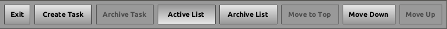
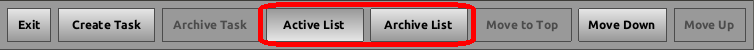
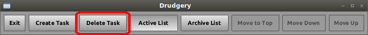

Drudgery User Guide
Getting Started
When Drudgery is opened for the first time, your first Task will be added for you.
There are three areas in Drudgery to be aware of:
- The Menu Bar
- The Task Viewer
- The Task List
The Menu Bar contains buttons that control your Tasks.
The Menu Bar changes based on which Task List is viewed and what Task is selected.

Buttons
- The Exit button exits Drudgery.
- The Create Task button creates a new blank Task.
- The Restore Task button (not shown in figure) restores a selected Task, moving it to the Active List.
- The Archive Task button archives a selected Task, moving it to the Archived List.
- The Delete Task button (not shown in figure) deletes a selected Task, this action cannot be undone.
- The Active List button shows the Active List.
- The Archive List button shows the Archive List.
- The Move To Top button moves a selected Task to the top of the Active List.
- The Move Down button moves a selected Task down in the Active List position by one.
- The Move Up button moves a selected Task up in the Active List position by one.
The Task Viewer is where selected Task details are viewed.
If no Task is selected, the Task Viewer is greyed out.
Once a Task is selected, the Task Viewer is filled with the details of the selected Task.
Modifying a Task
To modify the details of a Task, click the Modify checkbox. Once checked, you may change the details of the Task. To save these changes, uncheck the Modify checkbox.
Working On a Task
To start Working On a Task, click the Working On checkbox. Once checked, the Task will automatically keep track of time spent Working On it. To stop Working On a Task, uncheck the Working On checkbox.
The Task List
The Task List is a list containing all of your Tasks. Depending on which list you are on, this list contains either your active Tasks or your archived Tasks.
Switching Task Lists
To change between the Active List and the Archive List, user the buttons on the Menu Bar.

Active List
The Active List contains Tasks that are actively being worked on. These Tasks can be modified, reordered, and worked on.
Archive List
The Archived List contains Tasks that have been worked on, but are no longer active. These Tasks cannot be modified, reordered, or worked on.
Create a Task
To Create a Task, select the Create Task button from the Menu Bar.
Restore a Task
To Restore a Task, select the Create Task button from the Menu Bar.
Archive a Task
To Archive a Task, select the Archive Task button from the Menu Bar.
This can only be don on Tasks that have working time allocated to them.

Delete a Task
To delete a Task, select the Delete Task button from the Menu Bar.
This can only be done with Tasks that have no working time allocated to them, or to Tasks that are in the Archive List.

Move a Task
To move a Task, start by selected a Task from the Task List.
Next, select the button from the Menu Bar
Selecting Move Down will move the selected Task down.
Selecting Move Up will move the selected Task up.
Exiting Drudgery
To exit Drudgery, select the Exit Task button from the Menu Bar.
More Help
For more help, feel free to contact:
Mike Moss (mrmoss@alaska.edu)